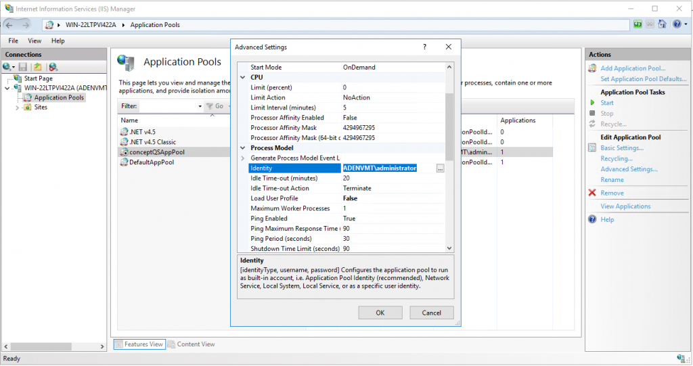
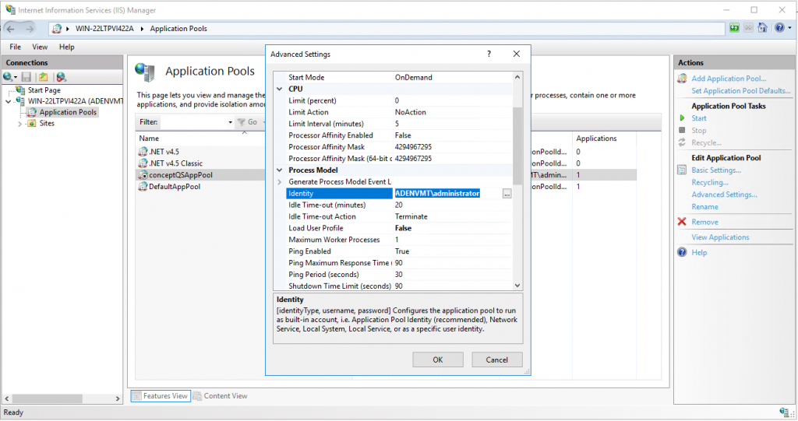

Symptom
When attempting to load the Dashboard, you receive the following error:
HTTP Error 503. The service is unavailable.
Cause
This error is caused by the conceptQSAppPool being stopped.
Resolution
In most situations you can resolve this by simply restarting the application pool in IIS and refreshing the QS page.
If the error persists after the application pool has been restarted, then the issue is most likely tied to the application pool identity, which can be seen listed in the Identity column in the screenshot below. The ConceptQSAppPool needs local admin rights to prevent it from crashing. Granularly, the ConceptQSAppPool identity needs the Logon as batch and Logon as service user rights assignment applied. Either grant the existing identity local admin rights or change the identity to an existing account with local admin rights.
For example:
 

To assign granularly:
-
Right-click on the conceptQSAppPool and select Advanced Settings...
-
Scroll down to Identity and enter a new username in the domain\username format.
-
Click OK and start the application pool.
The NDC dashboard will load in the browser.
If none of the solutions above solve the issue, check Windows Event Log -> Applications ->NDC for errors.